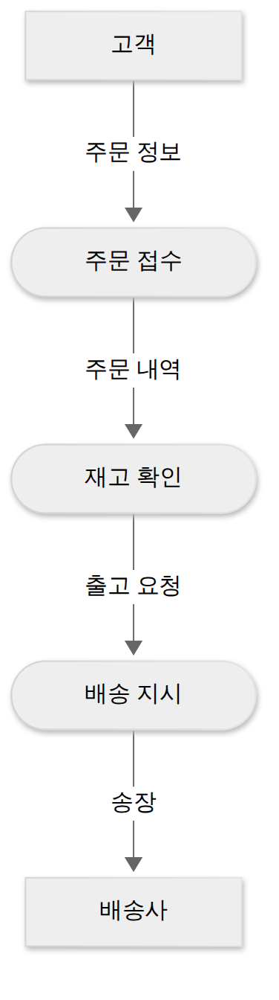

D001 · 요구분석기법
A1 정처기 공부 첫날이에요. 1과목 소프트웨어 설계의 맨 앞 칸, 요구사항 확인에서 시작해요. 소프트웨어를 만드는 모든 일은 “무엇을 만들어야 하나”를 아는 데서 출발하니까, 순서상으로도 여기가 첫 단추예요. 오늘은 요구사항이 무엇인지, 그리고 그것을 찾고·정리하고·쓰고·검토하는 요구분석기법을 봐요.
- 기능 요구사항과 비기능 요구사항을 구별하고, 검증 가능한 요구사항 문장을 고를 수 있다
- 요구사항 개발 4단계(도출 → 분석 → 명세 → 확인)의 순서와 단계별 활동을 설명할 수 있다
- 상황을 보고 알맞은 도출 기법(인터뷰·설문·워크숍 등)을 고를 수 있다
- 정형·비정형 명세, 동료 검토·워크스루·인스펙션을 구별할 수 있다
1. 큰 그림 — 요구사항이 왜 첫 단추인가
개발자에게 “일단 만들어 보고 고치자”는 익숙한 말이지만, 무엇을 만들지 모른 채 만든 코드는 대개 다시 만들게 돼요. 그래서 소프트웨어 공학은 개발 첫머리에 요구사항을 따로 다뤄요. 요구사항은 시스템이 제공해야 할 서비스와, 그 서비스가 지켜야 할 제약 조건을 말해요.
오늘은 하나의 사례를 끝까지 따라가요. 밀키트 쇼핑몰 오늘한끼를 리뉴얼하는 프로젝트예요. 고객은 수백 명, 사내에는 주문을 늘리고 싶은 영업팀과 포장·배송을 책임지는 운영팀이 있어요. 이 프로젝트가 요구를 찾고(도출), 정리하고(분석), 문서로 쓰고(명세), 검토하는(확인) 장면이 오늘 섹션 순서예요.
요구사항을 첫 단추라고 부르는 이유는 비용이에요. 요구사항 단계에서 생긴 잘못은 설계·구현·테스트를 거치며 그 위에 쌓인 결과물을 함께 끌고 내려가요. 기획 회의에서는 지우개 한 번으로 끝날 일이, 운영 중에 발견되면 핫픽스와 데이터 보정, 고객 공지문, 사과 쿠폰까지 줄줄이 따라와요.
→ 이 장면의 결과물: “요구사항을 일찍, 제대로 잡는다”는 목표. 그래서 다음 장면은 잡아야 할 요구사항이 어떤 종류로 나뉘는지예요.
2. 장면 1 — 요구를 두 종류로 나누기 (기능·비기능 요구사항)
앞에서 요구사항을 일찍 잡자고 했는데, 오늘한끼 팀이 처음 모은 요구 메모를 보면 “쿠폰 적용”과 “결제가 빨라야 함”이 한 줄에 섞여 있어요. 둘은 성격이 달라서, 하나는 화면과 API로 만들고 다른 하나는 성능 테스트로 확인해요. 그래서 요구사항은 먼저 두 갈래로 나눠요.
기능 요구사항은 시스템이 수행해야 할 기능, 즉 입력을 받아 무엇을 처리하고 무엇을 내놓는지예요. 오늘한끼라면 “회원은 상품을 장바구니에 담을 수 있다”, “주문 후 1시간 안에는 주문을 취소할 수 있다”가 여기예요. 문장의 주어가 사용자나 시스템이고 서술어가 동사라는 게 특징이에요.
비기능 요구사항은 기능이 아니라 그 기능이 갖춰야 할 품질과 제약이에요. 성능, 보안, 가용성, 사용성, 호환성처럼 여러 기능에 두루 걸리는 조건이에요. “결제 응답은 3초 이내”는 결제 버튼 하나의 기능이 아니라, 결제라는 기능이 얼마나 잘 돌아야 하는지를 말해요.
한 장 요약 — 비기능 요구사항의 대표 종류와 오늘한끼에서의 예예요.
| 종류 | 무엇을 정하나 | 오늘한끼 예 |
|---|---|---|
| 성능 | 응답 시간·처리량 | 결제 응답 3초 이내, 동시 접속 2,000명 처리 |
| 보안 | 인증·암호화·접근 통제 | 카드번호는 암호화해 저장, 관리자 화면은 사내망에서만 |
| 가용성 | 서비스가 살아 있는 비율 | 월 가용성 99.9% 이상 |
| 사용성 | 배우고 쓰기 쉬운 정도 | 처음 온 사람도 3분 안에 첫 주문 완료 |
| 호환성 | 다른 환경·시스템과 함께 동작 | 최신 두 버전의 주요 브라우저에서 동작 |
| 유지보수성 | 고치고 넓히기 쉬운 정도 | 결제 대행사를 바꿀 때 결제 모듈만 수정 |
요구사항을 바라보는 눈높이로도 나눌 수 있어요. 사용자 요구사항은 사용자가 이해하는 말로 쓴 “이런 서비스가 필요하다”이고, 시스템 요구사항은 그것을 개발자가 구현할 수 있게 더 자세히 쓴 명세예요. 같은 요구를 고객 언어와 개발자 언어로 두 번 적는 셈이에요.
비기능 요구사항에서 시험이 노리는 지점은 검증 가능성이에요. “빠르게 해 주세요”는 요구사항이라기보다 소원에 가까워요. 소원은 테스트 케이스로 만들 수 없어서, 다 만든 뒤 합격인지 불합격인지 가를 기준이 없어요. 그래서 “2초 이내”, “99.9%”처럼 숫자와 조건을 붙여 잴 수 있게 바꿔 써요.
→ 이 장면의 결과물: 기능·비기능으로 나뉜, 측정 가능한 요구 문장. 그래서 다음은 이런 요구를 어떤 순서로 만들어 가는지, 전체 흐름이에요.
3. 요구사항 개발 4단계 — 도출 → 분석 → 명세 → 확인
앞 장면에서 좋은 요구 문장이 어떤 모양인지 봤으니, 이제 그 문장을 어디서 얻고 어떻게 다듬어 확정하는지 볼 차례예요. 요구사항 개발 프로세스는 네 단계로 나뉘어요. 이름이 곧 하는 일이라 순서만 잡으면 외울 게 많지 않아요.
각 단계는 손에 남는 결과물로 기억하면 쉬워요. 도출이 끝나면 날것의 요구 목록이, 분석이 끝나면 정리·합의된 요구와 모델이, 명세가 끝나면 요구사항 명세서가, 확인이 끝나면 검토를 통과한 명세서가 남아요. 그 뒤 개발 도중에 들어오는 변경을 통제하고 추적하는 일은 요구사항 관리라는 별도 활동으로, D006에서 다뤄요.
→ 이 장면의 결과물: 네 단계 지도. 그래서 다음 장면부터 한 단계씩 오늘한끼 프로젝트로 들어가요. 첫째는 요구를 찾아내는 도출이에요.
4. 장면 2 — 요구를 찾아내기 (도출 기법)
요구사항 도출은 이해관계자에게서 요구를 찾아내고 모으는 활동이에요. 쉬워 보이지만 가장 어려운 단계예요. 사용자는 자기가 원하는 걸 정확히 알고 있어요. 막상 만들어 보여 주기 전까지는요. 게다가 늘 하는 업무일수록 당연해서 말로 꺼내지 않아요. 그래서 상황에 따라 다른 기법을 꺼내 써요.
혼자 깊게, 여럿 넓게 — 인터뷰와 설문
인터뷰는 핵심 담당자를 직접 만나 질문하고 답을 듣는 방법이에요. 오늘한끼의 CS 팀장에게 “환불이 가장 꼬이는 경우가 언제인가요?”라고 묻고, 답에 따라 꼬리 질문을 이어 가며 예외 업무까지 캐낼 수 있어요. 깊이가 강점이고, 한 사람씩 만나야 해서 시간이 많이 드는 게 대가예요.
설문은 많은 사람에게 같은 질문지를 돌려 답을 모으는 방법이에요. 고객 500명에게 “평일 몇 시에 주문하나요?”를 묻는다면 설문이 맞아요. 500명을 한 명씩 인터뷰하면 요구사항보다 분석가의 목소리가 먼저 바닥나요. 빠르고 싸게 넓게 모으는 대신, 질문지에 없는 이야기는 들을 수 없고 답의 이유를 파고들기 어려워요.
여럿이 모여서 — 브레인스토밍과 워크숍
브레인스토밍은 여러 사람이 모여 한 주제에 대해 아이디어를 최대한 많이 쏟아 내는 회의 기법이에요. “밀키트를 더 자주 사게 하려면?” 같은 열린 질문에 맞아요. 핵심 규칙은 비판 금지예요. 누가 엉뚱한 말을 해도 그 자리에서 평가하지 않고, 남의 아이디어에 덧붙여 키워요. 고르는 일은 회의가 끝난 뒤에 해요.
워크숍은 여러 이해관계자를 한자리에 모아, 진행자의 진행 아래 집중적으로 토의해 요구를 정의하고 합의하는 방법이에요. 오늘한끼에서 영업팀은 “주문 마감을 18시로 늦춰 매출을 늘리자”, 운영팀은 “포장 인력 때문에 14시가 한계”라고 맞서요. 두 팀을 따로 인터뷰하면 각자 “저쪽이 현실을 모른다”는 확신만 두 배로 키워서 돌아와요. 한자리에 앉혀야 절충안이 나와요.
브레인스토밍과 워크숍은 둘 다 여럿이 모이지만 목적이 달라요. 브레인스토밍은 아이디어를 넓히는 회의라 판단을 미루고, 워크숍은 요구를 모아서 정하는 회의라 결론을 내요. 사용자와 개발자가 함께 집중 회의로 요구를 정하는 JAD(공동 애플리케이션 설계)도 워크숍 방식의 하나예요.
보고, 만들어 보고, 연기해 보기 — 관찰·프로토타이핑·유스케이스·롤플레잉
관찰은 사용자가 실제로 일하는 현장을 지켜보며 요구를 찾는 방법이에요. 물류센터 직원에게 출고 절차를 물으면 “규정대로 해요”라고 답하는데, 옆에서 보면 엑셀 매크로 세 개와 모니터에 붙은 포스트잇으로 돌아가고 있어요. 말로는 나오지 않는 암묵적 업무를 찾는 데 강해요. 다만 지켜보는 사람이 있으면 평소와 다르게 일할 수 있어요.
프로토타이핑은 핵심 화면이나 기능을 간단한 시제품으로 먼저 만들어 보여 주고 피드백을 받는 방법이에요. 새 주문 화면을 클릭되는 시안으로 보여 주면 “쿠폰 칸이 결제 버튼 아래 있으면 못 찾겠다” 같은 말이 그제야 나와요. 요구를 구체화하는 힘이 크고, 시제품을 완성품으로 착각하게 만드는 위험이 있어요.
유스케이스는 사용자(액터)가 시스템을 통해 얻으려는 목적을 기능 단위 시나리오로 쓰는 방법이에요. “고객이 상품을 검색한다 → 장바구니에 담는다 → 주문한다”처럼 사용자 관점에서 기능을 정리해요. 그림으로는 사람 모양 액터와 타원 유스케이스로 그리고, 자세한 표기법은 내일 D002 UML에서 봐요.
롤플레잉은 고객·상담원·배송 기사처럼 역할을 나눠 실제 상황을 연기해 보며 요구를 찾는 방법이에요. “배송 기사가 문 앞에서 고객과 연락이 안 될 때”를 연기해 보면, 시스템에 ‘부재 시 처리 방법’ 입력 칸이 필요하다는 걸 알게 돼요. 문서로는 상상하기 어려운 상호작용을 찾는 데 쓰여요.
한 장 요약 — 위에서 설명한 여덟 기법을 쓰는 상황과 대가로 나란히 놓으면 이래요.
| 기법 | 이럴 때 쓴다 | 대가 |
|---|---|---|
| 인터뷰 | 소수 핵심 담당자의 업무·예외를 깊게 | 시간이 많이 든다 |
| 설문 | 다수에게 같은 질문을 빠르게 | 깊이·이유를 듣기 어렵다 |
| 브레인스토밍 | 새 아이디어를 많이 모은다(비판 금지) | 걸러 내는 일이 따로 필요하다 |
| 워크숍 | 이해관계자 상충 요구를 조율·합의 | 여러 사람 일정을 맞춰야 한다 |
| 관찰 | 말로 설명 안 되는 현장 업무 | 관찰되면 행동이 바뀔 수 있다 |
| 프로토타이핑 | 시제품을 보여 주고 피드백 | 시제품을 완성품으로 오해 |
| 유스케이스 | 사용자 관점 기능 시나리오 정리 | 비기능 요구는 담기 어렵다 |
| 롤플레잉 | 역할을 나눠 상황 재현 | 참여자가 역할에 몰입해야 한다 |
시험은 기법 이름의 정의보다 “이 상황에 맞는 기법은?”으로 묻는 경우가 많아요. 지문에서 인원이 많은지, 깊이가 필요한지, 부서끼리 부딪히는지, 말로 설명하기 어려운 업무인지 같은 단서를 찾으면 답이 정해져요.
→ 이 장면의 결과물: 인터뷰 메모, 설문 결과, 워크숍 합의안이 뒤섞인 날것의 요구 목록. 그래서 다음 장면은 이걸 정리하고 충돌을 푸는 분석이에요.
5. 장면 3 — 정리하고 충돌 풀기 (요구사항 분석)
도출이 끝난 오늘한끼 팀의 목록에는 중복도 있고, 서로 부딪히는 요구도 있고, “나중에 되면 좋은 것”과 “없으면 오픈 못 하는 것”이 같은 무게로 적혀 있어요. 이 상태로 문서를 쓰면 명세서가 메모장의 확장판이 돼요. 분석은 이 목록을 개발할 수 있는 모양으로 다듬는 단계예요.
분류는 요구를 기준에 따라 나누는 일이에요. 기능인지 비기능인지, 우선순위가 높은지, 앞으로 바뀔 가능성이 큰지 같은 기준을 써요. 예를 들어 “쿠폰 적용”은 기능·높은 우선순위·변경 가능성 높음(프로모션 정책이 자주 바뀌니까)으로 분류돼요.
개념 모델링은 요구를 그림 모델로 표현해 구조와 흐름을 드러내는 일이에요. 자연어 목록으로는 “주문 정보가 어디서 어디로 가는지”가 잘 보이지 않지만, 자료 흐름도(DFD)나 UML로 그리면 빠진 흐름이 바로 보여요. 아래는 오늘한끼의 주문 흐름을 DFD 느낌으로 그린 것이고, DFD 기호는 D004에서 자세히 봐요.

할당은 요구를 어느 하위 시스템이나 구성 요소가 맡을지 나누는 일이에요. “결제 응답 3초 이내”라는 요구를 결제 서비스 2초, 주문 서비스 1초처럼 쪼개 맡기는 식이에요. 마이크로서비스로 나뉜 시스템이라면 팀별 SLA를 정하는 장면과 같아요.
협상은 이해관계자 사이의 충돌을 풀고 우선순위를 합의하는 일이에요. 모든 요구를 다 넣을 시간과 돈은 없으니, 가치는 높고 비용은 낮은 것부터 하자는 식으로 순서를 정해요. 워크숍이 “충돌을 찾고 합의하는 자리”라면, 협상은 분석 단계에서 그 합의를 요구 목록에 반영하는 활동이에요.
정형 분석은 요구를 수학적 표기로 옮겨 모순이나 빠진 조건을 기계적으로 찾는 일이에요. “재고가 0이면 주문 불가”와 “예약 주문은 재고와 무관하게 가능”이 동시에 있으면, 수식으로 옮기는 순간 둘이 충돌한다는 게 드러나요. 다음 장면의 정형 명세와 같은 도구를 분석에 쓰는 셈이에요.
한 장 요약 — 분석의 다섯 활동이에요.
| 활동 | 하는 일 | 오늘한끼 예 |
|---|---|---|
| 분류 | 기능/비기능·우선순위·변경 가능성으로 나눈다 | 쿠폰 = 기능, 우선 높음, 자주 바뀜 |
| 개념 모델링 | DFD·UML 등 모델로 그린다 | 주문 흐름 DFD |
| 할당 | 하위 시스템에 요구를 나눠 맡긴다 | 3초를 결제 2초 + 주문 1초로 |
| 협상 | 충돌을 풀고 우선순위를 합의한다 | 쿠폰 먼저, AR 미리보기는 보류 |
| 정형 분석 | 수학적 표기로 모순을 찾는다 | 재고 0 주문 불가 vs 예약 주문 |
→ 이 장면의 결과물: 분류·합의되고 모델로 그려진 요구. 그래서 다음 장면은 이걸 모두가 기준으로 삼을 문서로 쓰는 명세예요.
6. 장면 4 — 문서로 쓰기 (요구사항 명세)
분석까지 마친 요구도 사람들 머릿속과 회의록에 흩어져 있으면 금세 기억이 갈라져요. 석 달 뒤 영업팀은 “16시 마감이라고 했잖아요”, 운영팀은 “수도권만이라고 했잖아요”라고 말하게 돼요. 그래서 합의 내용을 하나의 문서, 요구사항 명세서(SRS, Software Requirements Specification)로 확정해요. 이 문서가 설계·개발·테스트의 기준이 돼요.
비정형 명세는 자연어 문장과 표·다이어그램 같은 그림으로 요구를 쓰는 방식이에요. 누구나 읽을 수 있어 고객과 함께 검토하기 좋아요. 대신 문장이 여러 뜻으로 읽힐 수 있어요. “재고보다 많이 주문할 수 없다”는 재고와 같은 수량은 되는지, 장바구니에 담는 순간 기준인지 결제 순간 기준인지가 애매해요.
정형 명세는 수학적 원리와 기호로 요구를 쓰는 방식이에요. 해석이 하나뿐이라 모호함이 없고, 도구로 모순을 검사할 수도 있어요. 대가는 쓰기도 읽기도 어렵다는 점이에요. Z로 쓴 명세는 모호함이 없지만, 읽을 수 있는 사람도 드물어서 오해할 사람조차 없다는 게 장점 아닌 장점이에요. 그래서 철도 신호·항공처럼 실수 비용이 아주 큰 분야에서 주로 써요.
?는 입력, '는 실행 뒤 값이에요. 위는 누구나 읽지만 “같으면 되나?”가 애매하고, 아래는 해석이 하나뿐이에요.정형 명세 언어는 이름이 시험에 나와요. 대표 다섯 개를 묶어서 기억하고, 자연어나 일반 다이어그램이 보이면 비정형이라고 가르면 돼요.
| 정형 명세 언어 | 한 줄 특징 |
|---|---|
| Z | 집합론·논리로 시스템의 상태와 연산을 쓴다 |
| VDM | Vienna Development Method. 모델 기반으로 자료와 연산을 정의한다 |
| Petri-net | 원·막대·토큰 그래프로 병행·동기화 흐름을 표현한다 |
| CSP | Communicating Sequential Processes. 프로세스끼리 주고받는 통신을 기술한다 |
| LOTOS | 시간 순서에 따른 상호작용을 기술하는 명세 언어 |
이 중 페트리 넷은 모양이 있는 정형 명세라 그림으로 보면 바로 이해돼요. 원은 상태(플레이스), 막대는 사건(트랜지션), 원 안의 점은 토큰이에요. 막대로 들어오는 모든 원에 토큰이 있어야 그 사건이 일어나고, 일어나면 토큰이 다음 원으로 옮겨 가요. “주문이 접수됐고 재고도 있어야 결제가 진행된다”는 동기화 조건을 그대로 그릴 수 있어요.
예: Z, VDM, Petri-net, CSP, LOTOS
장점: 모호하지 않고 모순 검사 가능
대가: 작성·이해가 어렵다
예: 자연어 문장, 표, 일반 다이어그램
장점: 쓰기 쉽고 누구나 읽는다
대가: 여러 뜻으로 읽힐 수 있다
어느 방식으로 쓰든 좋은 명세서가 갖출 조건은 같아요. 시험은 이 조건 이름을 고르게 하거나, 어긴 사례를 보여 주고 어떤 조건을 어겼는지 묻곤 해요.
| 조건 | 뜻 | 오늘한끼에서 |
|---|---|---|
| 정확성 | 고객이 실제로 원하는 것을 담았다 | 마감 시각이 합의안대로 16시다 |
| 완전성 | 필요한 요구와 예외가 빠짐없다 | 결제 실패·재고 부족 때 동작도 적었다 |
| 일관성 | 요구끼리 서로 모순되지 않는다 | “재고 0 주문 불가”와 예약 주문이 충돌하지 않게 정리 |
| 명확성 | 한 가지로만 해석된다 | “재고 이하”라고 등호까지 적는다 |
| 검증 가능성 | 만족했는지 시험·측정할 수 있다 | “빠르게” 대신 “3초 이내” |
| 추적 가능성 | 출처와 설계·코드·테스트로의 연결을 따라갈 수 있다 | 요구마다 번호를 붙여 테스트 케이스와 연결 |
| 수정 용이성 | 바꿀 때 한 곳만 고치면 되게 정리돼 있다 | 같은 요구를 여러 절에 중복해 쓰지 않는다 |
→ 이 장면의 결과물: 요구사항 명세서 초안. 그래서 마지막 장면은 이 문서가 제대로 쓰였는지 검토하는 확인이에요.
7. 장면 5 — 제대로 썼는지 검토하기 (요구사항 확인)
명세서 초안이 나오면 개발에 들어가고 싶어지지만, 앞에서 본 비용 막대를 떠올리면 여기서 한 번 더 걸러 내는 게 가장 싼 투자예요. 요구사항 확인은 명세서가 이해관계자의 실제 요구를 정확하고 완전하게 담았는지 검토하는 활동이에요. 문서를 쓴 사람은 자기 문서의 빈칸을 잘 못 봐서, 다른 사람의 눈을 빌리는 기법들이 발달했어요.
여기서 헷갈리기 쉬운 짝이 확인(Validation)과 검증(Verification)이에요. 확인은 “올바른 제품을 만들고 있나”, 즉 고객의 진짜 요구와 비교하는 것이고, 검증은 “제품을 올바르게 만들고 있나”, 즉 명세서대로 만들었는지 비교하는 것이에요. 명세서가 틀렸다면 명세서대로 완벽하게 만든 시스템도 고객에게는 틀린 시스템이에요.
동료 검토(Peer Review)는 명세서 작성자가 동료들에게 내용을 직접 설명하고, 동료들이 들으며 결함을 찾는 방법이에요. 오늘한끼 기획자가 팀 회의에서 명세서를 화면에 띄워 설명하고, 동료들이 “결제 실패 시 쿠폰은 돌려주나요?” 하고 묻는 장면이에요. 가볍고 빠르지만 작성자의 설명 흐름에 끌려가기 쉬워요.
워크스루(Walkthrough)는 검토 회의 전에 명세서를 미리 나눠 주고, 참가자들이 먼저 읽어 본 뒤 짧은 회의에서 결함을 찾는 방법이에요. 코드 리뷰로 치면 PR을 하루 전에 올려 두고 회의에서는 지적할 부분만 짚는 방식이에요. 미리 읽고 오니 회의가 짧고, 형식은 인스펙션보다 느슨해요.
인스펙션(Inspection)은 작성자를 제외한 다른 검토 전문가들이 정해진 절차와 체크리스트에 따라 명세서를 검사해 결함을 찾는 방법이에요. 역할(진행자·검토자·기록자)과 단계가 정해져 있고 결과를 기록으로 남겨, 세 기법 중 가장 공식적이에요. 작성자는 피고석에 앉는 셈이라, 변론 대신 지적 목록을 받아 들고 나와요.
인스펙션은 정해진 순서대로 진행돼요. 계획을 세우고, 참가자에게 문서의 배경을 알려 주고, 각자 준비한 뒤 회의에서 결함을 모으고, 작성자가 고치고, 고친 결과를 다시 확인해요.
- 계획 — 검토 범위와 참가자를 정한다
- 사전 교육 — 참가자에게 문서의 배경을 설명한다
- 준비 — 참가자가 각자 문서를 검토한다
- 인스펙션 회의 — 결함을 모아 기록한다
- 수정 — 작성자가 결함을 고친다
- 후속 조치 — 고친 결과를 확인한다
세 검토 기법 말고도 확인에 쓰는 방법이 있어요. 명세서로 프로토타입을 만들어 고객에게 보여 주거나, 요구마다 테스트 케이스를 미리 설계해 보는 방법이에요. 테스트를 설계할 수 없는 요구는 검증 가능성이 없다는 뜻이라 바로 걸러져요. CASE 도구로 명세의 일관성을 자동 점검하기도 하는데, 이건 D005 분석 자동화 도구에서 이어져요.
→ 이 장면의 결과물: 검토를 통과한 요구사항 명세서. 이 문서를 그림으로 표현하는 언어가 내일 D002의 UML이고, 이후 바뀌는 요구를 통제하는 일은 D006 요구사항 관리에서 이어져요.
8. 한 장으로 다시 꿰기
지금까지 따라온 장면을 표 하나로 다시 꿰면 이래요. 각 줄의 결과물이 다음 줄의 재료라는 점을 다시 보세요.
↔ 표가 넓어요. 옆으로 밀어서 보세요
| 장면 | 하는 일 | 시험 개념 | 결과물 |
|---|---|---|---|
| 1. 나누기 | 요구를 종류별로 가른다 | 기능·비기능, 검증 가능성 | 측정 가능한 요구 문장 |
| 2. 도출 | 이해관계자에게서 요구를 찾는다 | 인터뷰·설문·브레인스토밍·워크숍·관찰·프로토타이핑·유스케이스·롤플레잉 | 날것의 요구 목록 |
| 3. 분석 | 정리하고 충돌을 푼다 | 분류·개념 모델링·할당·협상·정형 분석 | 합의된 요구와 모델 |
| 4. 명세 | 문서로 확정한다 | 정형(Z·VDM·Petri-net·CSP·LOTOS)·비정형, 명세서 조건 7가지 | 요구사항 명세서 |
| 5. 확인 | 제대로 썼는지 검토한다 | 동료 검토·워크스루·인스펙션, 확인과 검증 | 검토를 통과한 명세서 |
- 상황을 보고 도출 기법 고르기가 가장 많이 나와요. 다수·같은 질문은 설문, 소수·심층은 인터뷰, 상충 요구 조율·합의는 워크숍, 비판 금지는 브레인스토밍.
- “검증 가능한 요구사항”은 숫자·단위가 붙은 선지예요. 동사로 끝나는 선지는 기능 요구사항이에요.
- 4단계 순서(도출 → 분석 → 명세 → 확인)를 섞어 놓고 바른 순서를 고르게 해요.
- Z·VDM·Petri-net·CSP·LOTOS는 정형 명세. “작성자 제외”, “가장 공식적”은 인스펙션.
확인 문제 (채점 완료 · 2/3)
- 500명의 사용자에게 동일한 사용 패턴 질문을 단기간에 받으려면?
정답·해설
② 설문. 많은 사용자에게 같은 문항을 빠르게 모으는 상황이에요. 인터뷰는 심층 파악용이라 500명에게는 비효율적이에요. - 영업팀과 운영팀의 상충하는 요구를 함께 논의해 합의하려면?
정답·해설 (오답 기록됨)
① 워크숍. 여러 이해관계자의 상충 요구를 한자리에서 조율하는 기법이에요. 나머지는 코드 분석·테스트·빌드 활동이에요. - 다음 중 검증 가능한 비기능 요구사항은?
정답·해설
③. “2초 이내”는 측정할 수 있는 성능 요구사항이에요. ①④는 기능, ②는 “빠르다”가 모호해서 검증할 수 없어요.
고른 뒤 답안 복사 → 디스코드 공부 채널에 붙여넣기 하면 돼요.